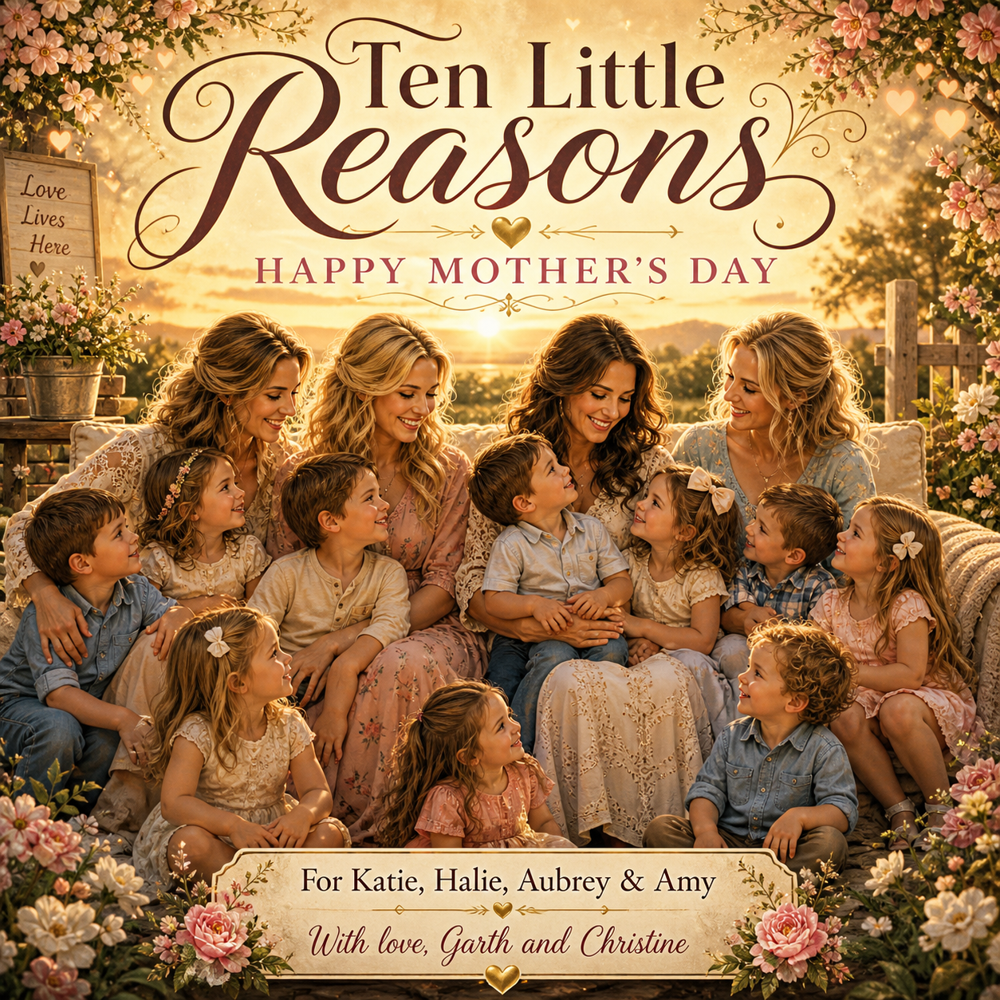

Ten Little Reasons
A Mother’s Day song, video, and cover-art project for Katie, Halie, Aubrey, and Amy — from Garth and Christine.

Dedication
To Katie, Halie, Aubrey, and Amy:
Thank you for everything you do for our family and for the love you give to our ten grandchildren. You are appreciated more than words can say.
With love, Garth and Christine
Listen to the Song
Watch the Video
About This Project
Ten Little Reasons is a heartfelt Mother’s Day tribute created by Garth and Christine for Katie, Halie, Aubrey, and Amy, the loving mothers of their ten grandchildren.
This project includes a personalized Mother’s Day song, Suno-style lyrics, an MP3 audio file, an MP4 video file, and custom cover art celebrating the love, patience, strength, and care these mothers give every day.
Suno Style Prompt
Emotional country pop Mother’s Day ballad, warm acoustic guitar, soft piano, heartfelt male and female duet vocals, gentle drums, family love theme, uplifting chorus, sincere and sentimental, modern country sound